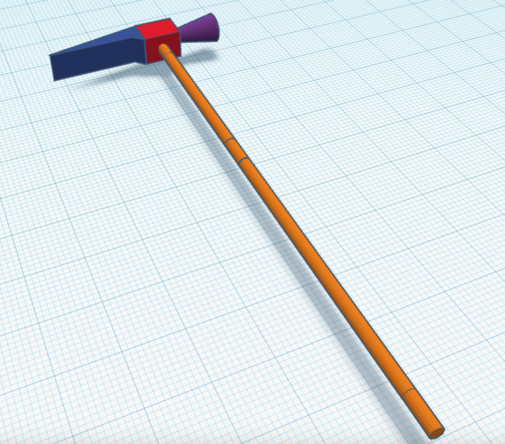

Tinkercad chess project

I made Queen Peace, one of the Chess types. It tooks 20 minutes to make this Queen piece. When I making this, I was trying to make it 100% same as real piece. I didn't make it 100% same. But it looks good.

I was trwing to make a Kalimba turning machine which is looks like a hammer. It doesn't looks like 100% same but it looks similar! I draw a 3d skatch first. After it, I made the hammer.